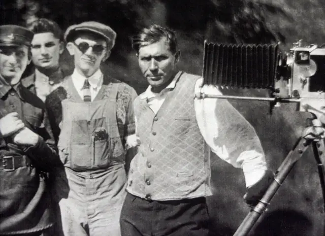

Іван Кавалерідзе
1887-1978
«Я не визнаю родичання "за калом", я визнаю родичання тільки "за духом"»
1887-1978
«Я не визнаю родичання "за калом", я визнаю родичання тільки "за духом"»
Іван Кавалерідзе, хоча й не загинув фізично в часи Розстріляного відродження, безперечно є однією з його трагічних жертв. Його творчість, сповнена національного духу та новаторських ідей, зазнала нищівної критики та замовчування з боку радянської влади. Багато його сміливих задумів так і не були втілені, а вже створені роботи зазнавали спотворень або й знищувалися. Цей тиск і несправедливість, безсумнівно, завдали глибоких ран його творчій душі та позначилися на його подальшій долі, перетворивши яскравого митця на внутрішнього емігранта у власній країні.
Незважаючи на складні обставини, Іван Кавалерідзе залишив по собі неоціненний спадок в українській культурі. Його скульптурні композиції, такі як пам'ятники Тарасу Шевченку в Ромнах і Полтаві, вирізняються монументальністю та глибоким розумінням національного характеру. Як режисер, він збагатив українське кіно такими знаковими стрічками, як "Злива" та "Прометей". Його драматургічні твори вирізняються гостротою соціальних проблем та оригінальністю художнього рішення.
Народився 14 квітня 1887 року на хуторі Ладанському (тепер село Новопетрівка Роменського району Сумської області). Походив він із давнього грузинського роду, батько його, Васо Кхварідзе, був переселений російською владою у середині ХIХ століття, після закінчення Кавказької війни, на Полтавщину.
Дитинство Кавалерідзе минало в селі Талалаївці, де він навчався у початковій земській школі. 1899 року, після трьох років навчання в земській школі, його забрав до Києва дядько, художник і археолог, хранитель скіфського відділу Київського археологічного музею Сергій Мазаракі. Він добре знав І.Рєпіна, приятелював з А.Куїнджі, в його домі часто бували артисти Київського оперного театру, художники П.Мартинович, О.Сластьон, І.Селезньов, С.Васильківський, С.Світославський, Ф.Красицький, І.Труш. Творча атмосфера в домі Сергія Мазаракі сприяла формуванню смаків і творчих захоплень юнака.
У Києві Кавалерідзе спочатку понад шість років навчався у приватній гімназії Валькера, яку змушений був залишити через переслідування поліцією за участь у студентських заворушеннях 1905 року. 1906 року Кавалерідзе вступає до Київського художнього училища в клас архітектури, потім переходить у клас ліплення скульптора Ф.Балавенського.
Щоб добути кошти на прожиття та навчання в училищі, Кавалерідзе мусив вечорами працювати статистом у Київському оперному театрі, де познайомився з Ф.Шаляпіним, з якого 1909 року ліпить погруддя. У 1909—1910 роках Кавалерідзе навчається у Петербурзькій Академії мистецтв, у 1910—1911 — у Парижі, в майстерні відомого скульптора Н.Аронсона. У Парижі Кавалерідзе знайомиться з багатьма діячами культури Франції, відвідує майстерню славетного скульптора Огюста Родена.
1910 року Кавалерідзе одержує першу премію в конкурсі, оголошеному Військово-історичним товариством на кращий пам’ятник княгині Ользі, і разом із скульптором П.Сніткіним, своїм однокурсником, та архітектором В.Риковим (художнім керівником був Ф.Балавенський) виконав проект пам’ятника, в якому виліпив постать княгині Ольги та просвітителів Кирила і Мефодія. Пам’ятник відкрито в серпні 1911 року. Того ж року Кавалерідзе почав працювати на московській кінофабриці П.Тімана та Ф.Рейнгардта, де був гримером і скульптором у фільмі "Ключі щастя" (1912) та картині Я.Протазанова "Відхід великого старця", для якої створив портрет Л.Толстого.

З 1911 по 1915 рік Кавалерідзе створює скульптури "Святослав у бою", "Борис Годунов", "Хокеїст", портрети Я.Протазанова, О.Волкова, О.Пушкіна, М.Гоголя, М.Мусоргського та ін. У 1915—1917 роках Кавалерідзе служить у царській армії. З 1918 по 1928 рік скульптор живе в Ромнах, працює у відділі наросвіти, викладачем ма лювання в школах, режисером повітового театру. В ці роки створює пам’ятники Т.Шевченку і Героям революції в Ромнах, Григорію Сковороді в Лохвиці, Артему в Бахмуті і Слов’яногірську, Т.Шевченку в Полтаві та Сумах та ін.
Як режисер поставив "Наталку Полтавку", "Трактирницю", "Лісову пісню" та ін. У 1928—1933 роках працює режисером на Одеській кінофабриці, у 1934—1941 роках — на Київській кіностудії "Українфільм". У 1944—1948 роках Кавалерідзе — старший науковий співробітник відділу монументальної скульптури Академії архітектури УРСР, створює скульптури "Григорій Сковорода", "Козак на коні", "Святослав", пам’ятники Дзержинському та Леніну та ін. У 1949—1957 роках створює портрети І.Павлова, Л.Толстого, М.Горького, Ф.Шаляпіна, скульптури "Кобзар", "А.Бучма в ролі Задорожного" та ін.У 1957—1962 роках Кавалерідзе — режисер Київської кіностудії ім. О.Довженка, створює пам’ятник Б.Хмельницькому у Кобеляках, скульптури "М.Кропивницький", "Тарас Шевченко на засланні" та ін.
1962 року відбулася персональна виставка творів І.Кавалерідзе. 1966 року — прем’єра п’єси Кавалерідзе "Вотанів меч" у Тернопіль-ському музично-драматичному театрі ім.Т.Шевченка, 1967 році — п’єси "Перекоп" у Харківському театрі ім.Т.Шевченка. 1969 року І.Кавалерідзе присвоєно звання народного артиста України. 1970 року — прем’єра п’єси "Перша борозна" у Сумському і Тернопільському музично-драматичних театрах. Створив проекти пам’ятників Лесі Українці, горельєф "Богдан Хмельницький" та ін. Останнім фільмом, створеним І.Кавалерідзе, була стрічка "Повія" (1961) за однойменним романом Панаса Мирного, яку високо оцінила тогочасна критика. На відміну від попередніх робіт у кіно й театрі, режисер вдається до глибшого психологізму, більшої точності характеристик, високої культури режисури, завдяки чому глядач глибоко переживає трагедію знедоленої жінки.
Помер Іван Кавалерідзе 3 грудня 1978 року в Києві, похований на Байковому кладовищі.
Навіть після того, як митець пішов з життя, деяким з них судилося народитися вдруге, як пам’ятникам Григорію Сковороді, княгині Ользі, Ярославу Мудрому, встановленим в останні десятиріччя в Києві.
1987 року започатковано Художньо-меморіальний музей Івана Кавалерідзе у селі Новопетрівцях Сумської області
1987 року на будинку по вулиці Червоноармійській, № 12, де мешкав митець, встановлено бронзову меморіальну дошку (скульптор Людмила Кулябко‑Корецька, архітектор Василь Гнєздилов)
1989 року відкрито галерею скульптурних робіт Івана Кавалерідзе при Сумському художньому музеї.
1992 року ім'ям Івана Кавалерідзе названо вулицю у Львові;
1992 року створено Благодійний меморіальний фонд Івана Кавалерідзе в Києві.
1993 року в Києві відкрито Музей-майстерню митця й виставковий зал «В домі Івана Кавалерідзе».
2002 року на стіні знімального павільйону Кіностудії імені Олександра Довженка встановлено меморіальну дошку (скульптор Ростислав Синько).
2014 року ім'ям Івана Кавалерідзе названо вулицю у Києві (Подільський район, ЖК Липинка-2)
Митцю присвячено фільми: «Грані таланту» (1970, М. Ліничук); «Іван Кавалерідзе. На зламі часу» (1987, телефільм Ростислава Синька); «Княжий пам'ятник» (1992; Л. Борисова); «Від Подолу до Золотих Воріт» (1999, відео; Родіон Єфіменко); «Шлях Івана Кавалерідзе» (1999, Григорій Десятник);